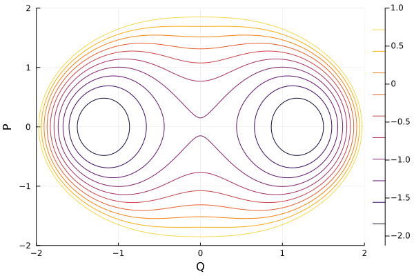
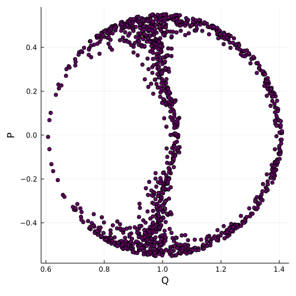
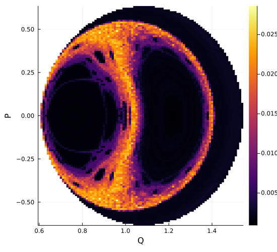

Examples for ClassicalDicke
The module DickeModel.ClassicalDicke works with the classical Dicke model, which is obtained by taking the expectation value of the quantum dicke model under coherent states (see, for example, Ref. [19]). The classical Dicke Hamiltonian is, regular at low energies, and chaotic at high energies. (see, for example, Ref. [12]).
Drawing contours of the available phase space
We may use the function ClassicalDicke.minimum_ϵ_for to draw the contour of the available phase space in the variables $(Q,P)$.
using DickeModel.ClassicalDicke
using Plots
system = ClassicalDickeSystem(ω=1, γ=1, ω₀=1)
Qs = Ps = -2:0.01:2
ϵgs = minimum_energy(system)
contour(Qs, Ps,
(Q,P) -> minimum_ϵ_for(system, p=0, P=P, Q=Q),
levels=10, clim=(ϵgs,1), xlabel="Q", ylabel="P")
Animating the classical evolution
We may use ClassicalSystems.integrate to classically evolve a point in the phase space. In this example, we compute the evolution of a point in the chaotic regime of the phase space, and project it into the bosonic $(q,p)$ plane. We use @animate from Plots to create an animation.
using DickeModel, DickeModel.ClassicalDicke, DickeModel.ClassicalSystems
using Plots
system = ClassicalDickeSystem(ω=1, ω₀=1, γ=1)
ϵ = -0.5
u0 = Point(system, Q=0, P=0, p=0, ϵ = ϵ)
times = 0:200
u = integrate(system, u0, times[end])
# plot of border (see previous example)
pl=contour(-4:0.01:4, -2:0.01:2,
(q,p) -> minimum_ϵ_for(system; P=0,p,q),
levels=[ϵ], xlabel="q",
ylabel="p", color=:black, key=false)
animation = @animate for t in times
plot(pl, u, tspan=(0,t), vars=(:q,:p), xlim=(-4,4))
end
mp4(animation,
"animation_of_classical_evolution.mp4")Drawing a Poincaré surface
Using ClassicalSystems.integrate, we may evolve initial conditions under the classical Dicke Hamiltonian. In this example we draw a Poincaré surface for the mixed regime Dicke model, where chaos and regularity coexist. We to integrate a bunch of initial conditions, and, using the callback system of DifferentialEquations, we save the points where $p=0$.
using DickeModel, DickeModel.ClassicalDicke, DickeModel.ClassicalSystems
using Plots
using DiffEqBase
system=ClassicalDickeSystem(ω=0.8, γ=0.8, ω₀=1)
mplot=scatter(fmt=:png, key=false, markersize=1, legend=false,
size=(500,500), color_palette=:darkrainbow, xlabel="Q", ylabel="P")
pts = Tuple{Float64, Float64}[] #a list of points (Q,P)
function save(state) #this function saves (Q,P) to pts if q = q₊ (and not q₋).
if q_sign(system,state.u,ϵ) == +
Q,q,P,p = state.u
push!(pts, (Q,P))
end
end
callback=ContinuousCallback((x, t, _) -> x[4], #when p=x[4] is 0,
save; #execute the function save
save_positions=(false,false), abstol=1e-3)
ϵ = -1.35
# We evolve a bunch of initial conditions with different Q values:
for Q in minimum_nonnegative_Q_for_ϵ(system,ϵ):0.02:maximum_Q_for_ϵ(system, ϵ)
if minimum_ϵ_for(system, P=0, p=0, Q=Q) > ϵ
continue
end
initial_condition = Point(system, ϵ=ϵ, P=0, p=0, Q=Q)
integrate(system, initial_condition, 10000,
callback=callback, save_everystep=false)
scatter!(pts)
empty!(pts)
end
mplot
Drawing a Lyapunov exponent map
Let us plot the Lyapunov exponents for the Poincaré map of the previous example. The code below is lengthy, but here's the idea in a nutshell:
Computing Lyapunov exponents is expensive, because one needs to integrate the variational system to obtain the fundamental matrix in the tangent space. However, any two points in the same trajectory will share the same Lyapunov exponent, so we may compute the Lyapunov exponent for an initial condition, and all other points that it passes through have the same one.
This code below generates a matrix in the plane $(p = 0,\epsilon = \text{constant})$, and averages the Lyapunov exponent of all the trajectories that pass through each square in the matrix. It starts taking initial conditions for the matrix, but if it reaches a square which another trajectory has crossed, it skips it, because it already knows the corresponding Lyapunov exponent.
using DickeModel, DickeModel.ClassicalDicke, DickeModel.ClassicalSystems
using Plots
using DiffEqBase
system = ClassicalDickeSystem(ω=0.8, γ=0.8, ω₀=1)
ϵ = -1.35
n_points = 50 #making this greater will make a smoother plot,
#but it may take time!
#we calculate the bounds
maxQ = maximum_Q_for_ϵ(system,ϵ)
minQ = minimum_nonnegative_Q_for_ϵ(system,ϵ)
maxP = maximum_P_for_ϵ(system,ϵ)
Qs = range(minQ, maxQ, length = n_points)
Ps = range(0, maxP, length = n_points) #we only compute the top half of
#the plane, and later mirror it
#this matrix will contain the average Lyapunov exponents of the n trajectories
#that have passed through that square or NaN if the point is outside of the
#available phase space.
mat_av_lya = [
if minimum_ϵ_for(system, P=P, p=0, Q=Q) > ϵ
NaN
else
0.0
end
for Q in Qs, P in Ps
]
#this matrix will contain the count of how many trajectories
#have passed through that square.
mat_counts =zeros(Int,length(Qs),length(Ps))
#a list of points (Q,P) to temporarily store the points through
# which a given trajectory passes through.
pts = Tuple{Float64, Float64}[]
#this function saves (Q,P) to pts if q = q₊ (and not q₋).
function save(state)
if ClassicalDicke.q_sign(system,state.u,ϵ) == +
Q,q,P,p = state.u
push!(pts, (Q,P))
end
end
callback = ContinuousCallback((x, t, _) -> x[4], #when p=x[4] is 0,
save; #execute the function save
save_positions=(false,false), abstol=1e-3)
#an auxiliary function, which gives the index k so that r[k] ≥ v >r[k]
function index_of_subinterval(v,r)
if r[end] <v
return length(r)
end
if v < r[1]
return 1
end
return Int(round(((v-r[1])/(r[end]-r[1]))*(length(r)-1) +1))
end
#we iterate over the matrix and the values of Q,P
for ((Q,P),av_lyapunov,count) in zip(Iterators.product(Qs,Ps),mat_av_lya,mat_counts)
# if we are out of the available phase space or we
# already have one trajectory that has passed through this square
if av_lyapunov===NaN || count > 0
continue #we skip
end
#the following 4 lines will populate pts with all the points (mQ,mP) in the
#Poincaré map that the trajectory starting at (Q,P) passes through.
empty!(pts)
push!(pts,(Q,P))
point = ClassicalDicke.Point(system, Q=Q, P=P, p=0, ϵ=ϵ)
λ = ClassicalSystems.lyapunov_exponent(system, point,
#decreasing these numbers will produce more precise results but takes more time.
tol = 1e-8,
λtol = 0.00005,
callback = callback)
for (mQ,mP) in pts
#we save the Lyapunov into all of the squares that the trajectory visited.
iQ,iP = index_of_subinterval(mQ,Qs),index_of_subinterval(abs(mP),Ps)
#if we are inside the available phase space
if mat_av_lya[iQ,iP] !== NaN
#we update the average
mat_av_lya[iQ,iP] = (mat_av_lya[iQ,iP]*mat_counts[iQ,iP] + λ) /
(mat_counts[iQ,iP] + 1)
mat_counts[iQ,iP] += 1 #we update the count
end
end
end
mat=transpose(mat_av_lya) #we transpose because heatmap takes transposed matrices.
mat=vcat(mat[end:-1:2,1:end], mat) #mirror in P
Ps=vcat(-Ps[end:-1:2], Ps) #update Ps with negative values
heatmap(Qs, Ps, mat,
xlabel="Q", ylabel="P",
clim=(0.01,NaN), #Lyapunovs below 0.005 we take as 0
size=(550,500))
It looks very similar to the Poincaré map of the previous example! Notice how there are regular (black) and chaotic (colored) regions.